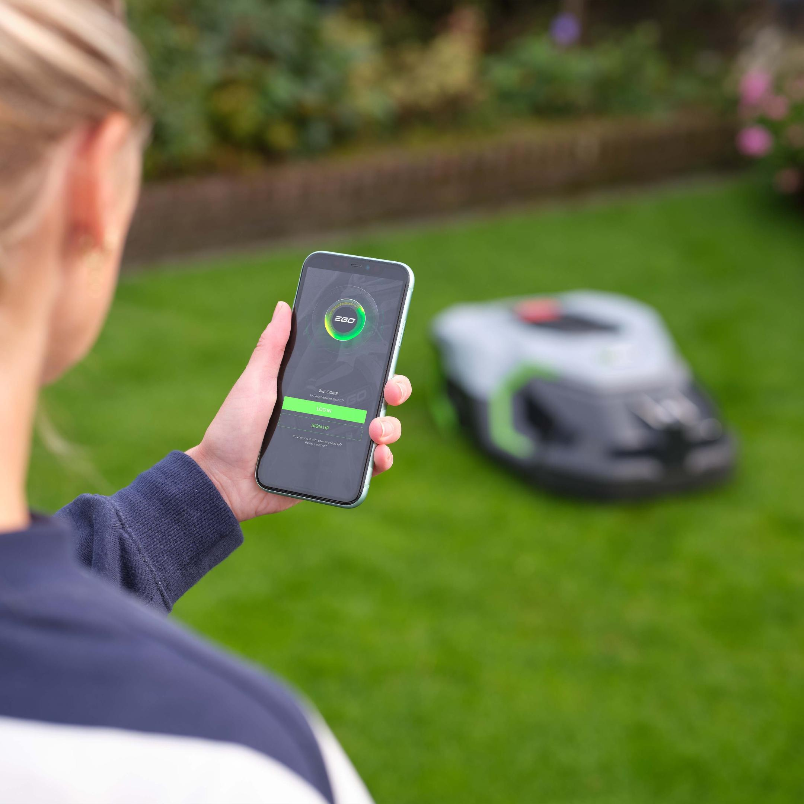

Robot tondeuses EGO Power+ : Quand la robotique facilite le quotidien
Publié le 5 mai 2025

La robotique ne cesse de se réinventer pour améliorer la vie des utilisateurs. EGO Power+, entreprise spécialiste des équipements d’extérieur alimentés par batterie, franchit un nouveau cap en proposant des robots tondeuses accessibles, efficaces et conçus pour simplifier l’entretien des jardins, même les plus complexes.
Une entreprise portée par l'innovation
EGO™, filiale du Groupe CHERVON, est animée par une passion constante pour l’innovation. Depuis sa création en 1993, la marque a su repousser les limites des outils sans fil, devenant l’un des plus grands fabricants mondiaux d’équipements à batterie. Aujourd’hui, EGO produit plus de 10 millions d’unités par an, distribuées dans 65 pays.
Sa technologie Arc Lithium™ 56V offre des performances comparables aux moteurs thermiques, mais sans les inconvénients du bruit, des émanations ni de la gestion du carburant. Un confort d’utilisation allié à une efficacité qui redéfinit les standards du jardinage moderne.
Des robots tondeuses autonomes et performants
Avec les modèles RM2000E et RM4000E, EGO Power+ lance ses premiers robots tondeuses conçus pour répondre aux besoins variés des particuliers. Ils sont adaptés aux terrains allant jusqu’à 4 000 m² et capables de franchir des pentes jusqu’à 50 %.
Dotés de trois lames pivotantes et d’une largeur de coupe de 24 cm, ils assurent une tonte régulière et s’adaptent aux irrégularités du sol. Le mulching intégré permet de fertiliser naturellement le sol, tout en maintenant une belle qualité de gazon.
Leur connectivité 4G assure un fonctionnement optimal même dans les zones boisées, tandis que les systèmes de sécurité par code PIN et GPS renforcent la tranquillité d’esprit des utilisateurs.
Un contrôle intelligent grâce à EGO Connect
L’installation se fait via un fil de délimitation, après quoi l’utilisateur peut tout gérer depuis l’application EGO Connect.
Grâce à une connexion Bluetooth ou cellulaire selon les modèles tout se pilote depuis un smartphone ou une tablette, EGO Connect permet :
- Le démarrage à distance : lancez, mettez en pause ou arrêtez la tonte depuis n’importe où.
- La planification automatique : définissez des horaires de tonte personnalisés pour chaque jour de la semaine.
- Le suivi en temps réel : visualisez la position du robot, l’avancée de la tonte et l’état de la batterie via une carte interactive.
- La personnalisation : ajustez les hauteurs de coupe et changez les couleurs LED du robot selon vos préférences.
- L’entretien facilité : recevez des notifications pour l’affûtage des lames, les mises à jour logicielles et la maintenance générale.
Pour en savoir plus, visitez le site officiel : egopowerplus.fr